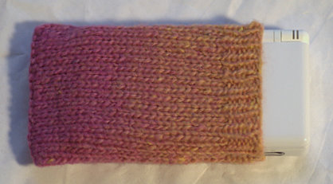

|
||
Premium Patterns Wintry Mix Mitts Love Bytes HawkeyeFree Patterns Kiddie Cadet Summerlin Ruffled Scarf Seamless DS Sock Simply Seamless Pouch Myriads of MushroomsExtras DIY Mitten Blocker Felt Patch Tutorial Yarn Dyeing Tutorial Needle Pouches Knitting Journal |
Seamless Nintendo DS Lite SockDesigned by Grace Schnebly
 Protect your Nintendo DS Lite from scratches and dings with this simple little cozy. There are no seams so it isn’t bulky and hugs your DS snugly and securely. The top inch is ribbed so that your DS will be held tightly in the sock and will not slip out. This pattern can also be altered to fit a variety of mp3 players, cell phones, and game systems. Size3.5”wide x 5.75” long Materials1 ball of SWTC Karaoke in #198 New Splash (50% Soy Silk/50% Wool, 50 grams/100 meters) Gauge5 sts/inch on size US 6 needles in stockinette slip stitch pattern. Pattern Notes PatternSlip Stitch Pattern (stockinette): k1, bring yarn to front, slip st purl wise, bring yarn to back PatternUsing larger needles, cast on 34 sts. Work in stockinette slip stitch pattern to end of row. Continue working in this fashion until piece measures 4.75 inches. Switch to smaller needles to knit ribbed section. Work in ribbing slip stitch pattern to end of row. Continue working ribbing for one inch, until piece measures 5.75”. Separate sides of the pocket by placing every other stitch onto stitch holder. BO all stitches and weave in ends. If you like this pattern you should check out our free Simply Seamless Pouch pattern! |
   Recent ReviewsRecent Posts
 Our Favorites
|
| © 2007 KathrynIvy.com | ||
{kind=link}